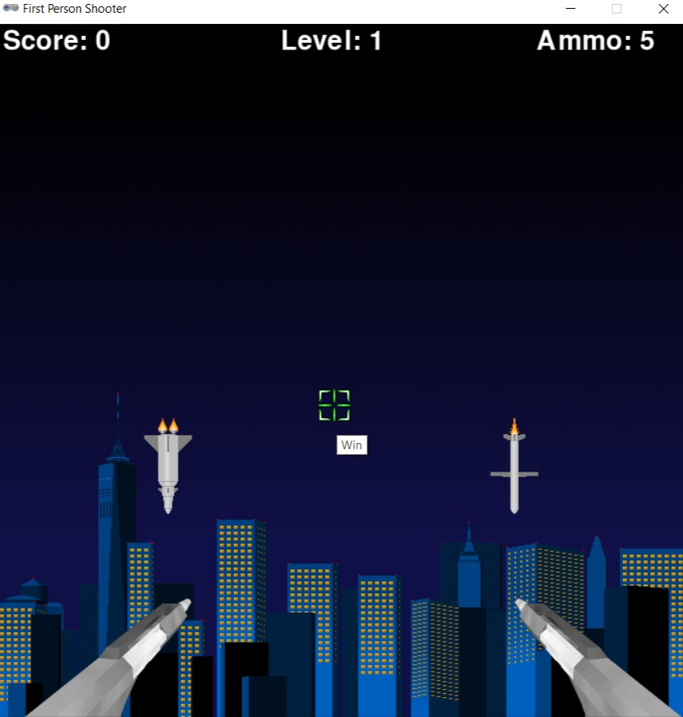

Completed: November 2023
During my programming I course I was introduced to python game devlopement. I learned the fundamentals of 2-D game programming using Python MU and developed a first person shooter game. I learned how to program on screen movement, both automatic and controlled by the user. I have attached the program files below and the game code to run in Pygame on Python MU.
Download Project